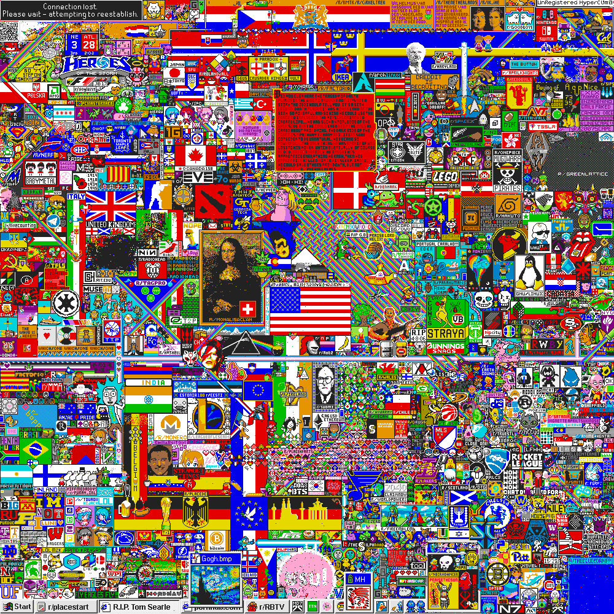

An Organizational Fruit Fly
r/place as a model organism for cumulative grounded theory.
Biology accumulates knowledge around the fruit fly. Organization science has no common organism to study. In April 2017, over a million Reddit users spent 72 hours making and defending pictures on a shared canvas, one pixel at a time. We propose this event as a model organism for how organizations emerge and evolve.
Here you find the frozen record of the event, the instrument we used to read it, and what it found in 705 communities.

How the study works
- The record Every pixel change, joined with the posts and comments of the communities behind the artworks. See the record in numbers
- Community coders One AI agent reads each community's full record and codes how its members organized. See how r/PlaceNL was coded
- The aggregator A second agent composes the 705 coded cases into one population model. See the population model
- The return The model goes back to every community coder, who says where it fails their case. The aggregator revises it. See PlaceNL's objection
- Organizational forms Communities that asked for similar changes group into six candidate forms. See the six forms
Researchers judge what the model is worth. How the instrument works